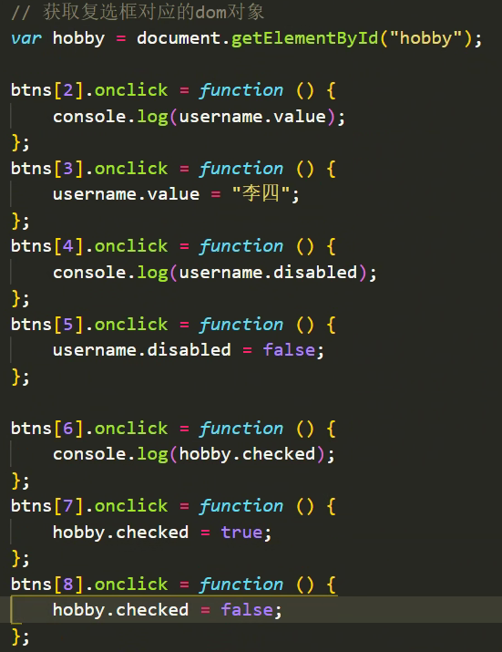
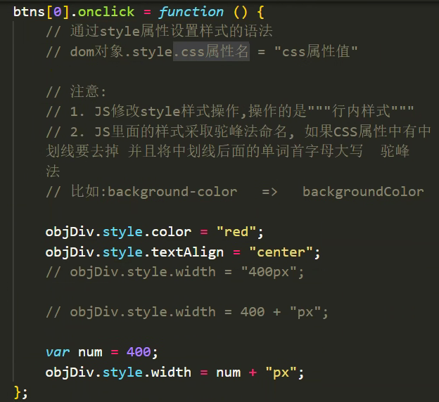
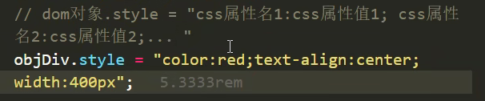
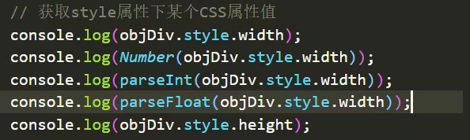
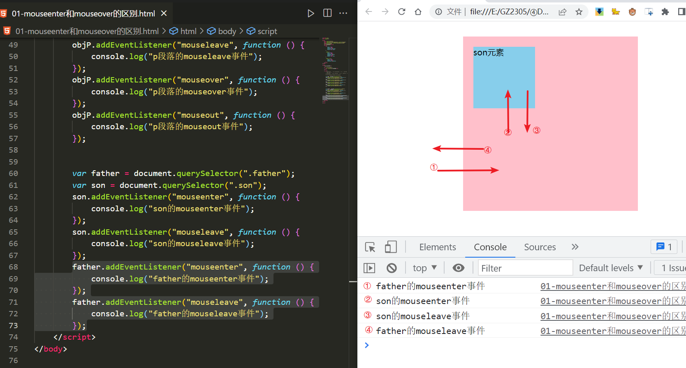
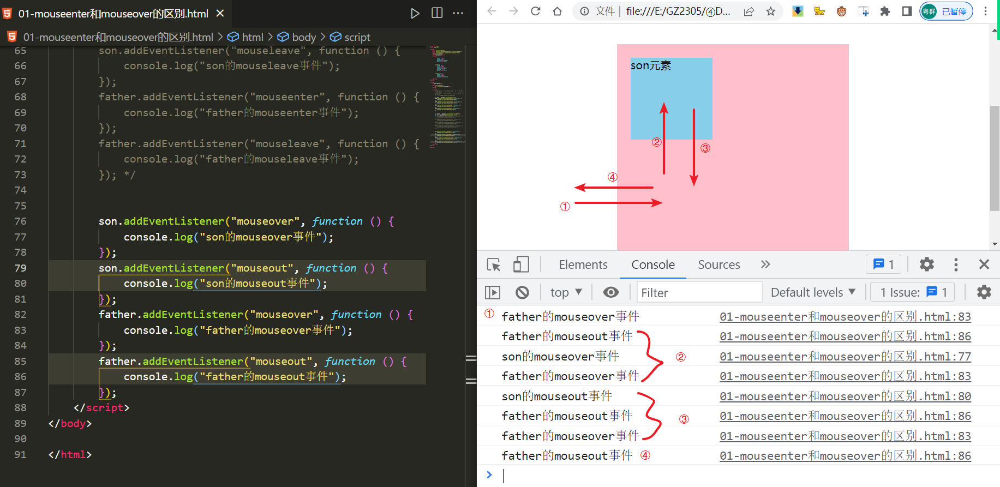

# DOM
- DOM 文档对象模型概念是指将 HTML 和 XML 文档表示为对象的编程接口 12。DOM 用一个逻辑树来表示一个文档，树的每个分支的终点都是一个节点，每个节点都包含着对象 34。DOM 可以让脚本或编程语言（通常是 JavaScript）与页面交互，改变文档的结构、样式和内容 35。
# DOM 操作为何要先获取元素
- 是因为我们想要对页面上的某个部分进行操作（比如修改属性、样式、内容或者绑定事件），就需要先获取到该部分对应的元素对象。只有获取到了元素对象，才能使用 DOM 提供的各种方法来操作它。
# DOM 操作主要步骤有以下几个：
创建元素：可以使用
document.write，innerHTML或者createElement方法来创建新的元素节点。增加元素：可以使用
appendChild或者insertBefore方法来把新的元素节点添加到已有的父节点中。删除元素：可以使用
removeChild方法来把已有的子节点从父节点中移除。修改元素：可以使用属性操作或者事件操作来修改元素节点的属性、内容、样式或者行为。例如，可以使用
setAttribute，getAttribute或者removeAttribute方法来操作自定义属性 ³，也可以使用事件监听器来绑定或者移除事件处理函数。// 创建一个新的 div 元素var newDiv = document.createElement("div");
// 设置 div 元素的 id 属性为 "myDiv"newDiv.setAttribute("id", "myDiv");
// 设置 div 元素的内容为 "Hello World"newDiv.innerHTML = "Hello World";
// 获取 body 元素var body = document.body;
// 把新的 div 元素添加到 body 元素的最后body.appendChild(newDiv);
// 获取新的 div 元素var myDiv = document.getElementById("myDiv");
// 为新的 div 元素添加一个点击事件监听器myDiv.addEventListener("click", function() {
// 点击时修改 div 元素的样式为红色背景和白色字体myDiv.style.backgroundColor = "red";
myDiv.style.color = "white";
});
# 获取元素对象的多种方式
使用
document.getElementById，document.getElementsByClassName，document.getElementsByTagName，document.querySelector或者document.querySelectorAll等方法。也可以利用节点操作获取元素，比如使用父节点（parentNode），子节点（children），兄弟节点（previousElementSibling 或者 nextElementSibling）等属性。document.getElementById ("id 属性值")
- 根据 id 获取元素
- 返回单个 DOM 对象或者 null
document.getElementsByTagName ("标签名")
- 根据标签名获取元素
- 获取所有同名标签，返回值是伪数组
- 返回的伪数组可以进行数组操作
- 数组里的元素才是一个个
DOM对象
document.getElementsByName ("name 属性值")
- 根据标签的 name 属性获取元素
- 返回值是伪数组
- 数组里的元素才是一个个
DOM对象
H5 新增获取元素方式：
- document.getElementsByClassName ("类名")
- 通过类名获取
- 返回值是伪数组
- 数组里的元素才是一个个
DOM对象
- document.getElementsByClassName ("类名")
document.querySelector ("带符号 css 选择器")
- 找到第一个符合 css 选择器的元素
- 返回单个 DOM 对象或者 null
document.querySelectorAll ("带符号 css 选择器")
找到所有符合 css 选择器的元素
返回值是伪数组
数组里的元素才是一个个
DOM对象console.log ( document.querySelector("#one"));
console.log ( document.querySelector("one"));
console.log ( document.querySelector("two"));
console.log ( document.querySelector("#two"));
console.log ( document.querySelector(".two"));
console.log ( document.querySelectorAll(".two"));
console.log ( document.querySelectorA1l("#one" ));
console.log( document.querySelectorA1l(".three"));
console.log( document.querySelectorA11("1i"));
console.log ( document.querySelectorAll("ul 1i"));
console.log( document.querySelectorAll("ul li:first-child"));
获取特殊元素 (body, html)
- document.body
- 获取 body 对象
- document.documentElement
- 获取 html 对象
- document.body
注意：以上获取 DOM 的方法，都是通过 document 对象，document 也可以替换为某个父 DOM 对象
console.log(document.querySelectorA1l("1i"));
console.log(objU1);
console.log(objU1[0]);
console.log(obju1[0].querySelectorAl1("1i"));
# 遍历 dom 对象返回的伪数组有以下几种方法：
- 使用 for 循环，根据伪数组的 length 属性和索引来遍历每个元素。
- 使用
Array.prototype.slice.call()方法，将伪数组转化为真正的数组，然后使用数组的forEach()方法来遍历每个元素。 - 使用
Array.from()方法，将伪数组转化为真正的数组，然后使用数组的 forEach () 方法来遍历每个元素。
# 操作双标签的内容
通过 dom 对象的 innerHTML 或者 innerText 可以操作双标签的标签内容
let obj = document.querSelector("h2")
console.log(obj.innerHTML) // 获取双标签内容的时候，innerHTML 能得到文本内容，并且包括标签名及空格和换行，innerHTML 解析 HTML 内容
console.log(obj.innerText) // 获取双标签内容的时候，innerText 能得到文本内容，设置双标签内容的时候，innerText 不解析 HTML 标签内容
# 事件
- 网页中的 "每个元素" 都可以产生某些可以触发 JavaScript 的事件，例如，我们可以在用户点击某按钮时产生一个事件，然后去执行某些操作。
# 事件三要素（重点）
- 事件源 (谁) : 触发事件的元素
- 事件类型 (做什么) I : 例如 onclick 点击事件
- 事件处理程序 (怎么做) : 事件触发后要执行的代码 (函数形式)，事件处理函数
# 常用鼠标事件
| 鼠标事件类型 | 触发条件 |
|---|---|
| click | 鼠标点击左键触发 |
| dblclick | 双击鼠标左键时触发 |
| mouseover | 鼠标移上触发 |
| mouseout | 鼠标移出触发 |
| mouseenter | 鼠标进入触发 |
| mouseleave | 鼠标离开触发 |
| mousemove | 鼠标移动触发 |
| mouseup | 鼠标弹起触发 |
| mousedown | 鼠标按下触发 |
| focus | 获取鼠标焦点触发 |
| blur | 失去鼠标焦点触发 |
| contextmenu | 右击鼠标或者按下菜单键时触发 |
# 行内绑定事件语法
<标签名 on 事件类型 ="js 代码或者函数名 ()"> 标签内容 </ 标签名 >
<标签名 on 事件类型 ="js 代码或者函数名 ()"/>
<button onclick="alert('Hello')">点击我</button>
# 动态绑定事件语法
语法一：
- dom 对象.on 事件类型 = 匿名函数或者函数名
语法二：
// 给 DOM 对象添加事件监听// 这种方法的优点是可以绑定多个事件和处理函数，缺点是不兼容低版本的浏览器btn.addEventListener('click', function() {alert('Hello')})
# DOM 对象操作标签内置属性
获取标签自带属性语法
- dom 对象。内置属性名
设置标签自带属性语法
- dom 对象。内置属性名 = 属性值
HTML 标签自带什么属性，那么该 DOM 对象就具有什么属性，但是有一个需要特别注意，就是 class 属性，HTML 的 class 属性代表类名，DOM 对象不是使用 class 属性作为类名，是使用
className作为类名注意：表单元素中有一些属性如:disabled、checked、selected, 元素对象的这些属性的值是布尔型。

console.log(obj.href)
console.log(obj.className)
console.log(obj.id)
console.log(obj.target)
obj.href = "https://www.jd.com"
obj.target = "_blank"
# DOM 对象操作自定义属性
- 自定义属性是 HTML 标签除掉内置属性之外的属性，程序员可以根据开发自己给标签添加一些属性，有一个约定俗成的规则，自定义属性喜欢使用 data - 开头
- 自定义属性可以用去存取一些网页使用到的临时数据
- 操作（建议专门去操作自定义属性，而不去操作内置属性，因为有些内置属性获取不到）：
- 获取自定义属性值
- dom 对象.getAttribute ("自定义属性名或者内置属性名")
- 设置自定义属性值
- dom 对象.setAttribute ("自定义属性名或者内置属性名", "属性值")
- 移除自定义或者内置属性
- dom 对象.removeAttribute ("自定义属性名或者内置属性名")
- 获取自定义属性值
# H5 新增自定义属性操作方式
- h5 新增自定义属性的目的是为了保存并使用数据。在 h5 中可以使用 data - 为前缀来设置自定义属性，例如：
<div data-index="1">123</div> |
- 在 js 中可以通过以下方法操作自定义属性：
- 通过 setAttribute (‘属性名’, 属性值) 设置；
- 通过 getAttribute (‘属性名’) 获取；
- 通过 dataset. 属性名（去掉 data - 前缀）获取或设置。
# DOM 对象操作样式
js 修改 style 样式操作，操作的是
行内样式js 里面的样式属性名采取驼峰命名
通过 style 属性设置样式的语法
- dom 对象.style.csss 属性名 = "css 属性值"
- dom 对象.style = css 属性名 1: css 属性值 1; css 属性名 2: css 属性值 2; ...



通过操作 class 属性修改样式
dom 对象.className = "类名"
dom 对象.className = "类名 1 类名 2 类名 3..."
let myDiv = document.querySelector("div")
myDiv.className = "one"
myDiv.className = "one two"
# H5 新增类名操作方式
H5 中有一个 classList 属性，它可以对元素的类名进行添加、删除、判断和切换等操作。这样就可以方便地对元素的类名进行修改和控制，例如：
// 获取 div 对象所有类名div.classList.value
// 添加 "active" 类div.classList.add("active");
// 删除 "active" 类div.classList.remove("active");
// 判断是否包含 "active" 类，返回布尔值div.classList.contains("active");
// 切换 "active" 类，有则删除这个类名，无则添加这个类名div.classList.toggle("active");
# DOM 节点
DOM 是文档对象模型，它是 HTML 和 XML 文档的编程接口。DOM 将文档解析为一个由节点和对象组成的树形结构，每个节点都有自己的属性和方法。在 DOM 中，有以下 12 种类型的节点 2：
- 文档节点（Document）：表示整个文档，是根节点，可以通过 document 对象访问。
- 元素节点（Element）：表示 HTML 或 XML 中的一个元素，如 <p> 或 < div > 等，可以通过标签名、类名、id 等方式获取。
- 属性节点（Attr）：表示元素节点的一个属性，如 class 或 style 等，可以通过 element.getAttribute () 或 element.setAttribute () 等方法操作。
- 文本节点（Text）：表示元素节点或属性节点中的文本内容，可以通过 nodeValue 属性或 data 属性获取或修改。
- CDATA 节节点（CDATASection）：表示 XML 文档中的 CDATA 节，即不会被解析器解析的文本内容。
- 注释节点（Comment）：表示文档中的注释内容，即 <!–…–> 之间的内容。
- 文档类型节点（DocumentType）：表示文档的类型声明，即 <!DOCTYPE …> 标签。
- 文档片段节点（DocumentFragment）：表示文档中的一部分内容，可以作为一个容器来存储其他类型的子节点，并且不会影响原有文档结构。
- 处理指令节点（ProcessingInstruction）：表示 XML 文档中的处理指令，即 <?..?> 标签。
- 实体引用节点（EntityReference）：表示 XML 文档中对实体的引用，如 © 等。
- 实体节点（Entity）：表示 XML 文档中定义的实体内容。
- 符号节点（Notation）：表示 XML 文档类型声明中定义的符号。
不同类型的节点有不同的特征和功能，在编写 JavaScript 代码时可以利用这些特征和功能来操作 DOM 树。
nodeType 节点类型里面常用值:
节点类型 nodeType 文档节点 9 元素节点 1 属性节点 2 文本节点 3 CDATA 节节点 4 注释节点 8 文档类型节点 10 文档片段节点 11 处理指令节点 7 实体引用节点 5 实体节点 6 符号节点 12 if (node.nodeType == 1) {
//node 是元素节点} else {
//node 不是元素节点}
# DOM 中有以下几种获取节点的方法：
- 通过顶层 document 节点获取：document.getElementById (id)、document.getElementsByName (name)、document.getElementsByClassName (className)、document.getElementsByTagName (tagName) 等，这些方法可以根据不同的条件返回一个或多个节点。
- 通过父节点获取：parentObj.firstChild、parentObj.lastChild、parentObj.childNodes 等，这些属性可以返回父节点下的某个或所有子节点。
- 通过子节点获取：childObj.parentNode、childObj.parentElement 等，这些属性可以返回子节点的直接父节点。
- 通过兄弟节点获取：neighbourObj.previousSibling、neighbourObj.nextSibling、neighbourObj.siblings 等，这些属性可以返回已知节点的上一个或下一个或所有兄弟节点。
- 通过 CSS 选择器获取：document.querySelector (selector)、document.querySelectorAll (selector) 等，这些方法可以根据 CSS 选择器的语法返回匹配的一个或多个节点。
不同类型的方法返回的结果可能是一个单一的节点对象，也可能是一个类数组对象（如 HTMLCollection 或 NodeList），需要注意区分和处理。
# DOM 中有以下几种获取元素的方法：
- 通过顶层 document 节点获取：document.getElementById (id)、document.getElementsByName (name)、document.getElementsByTagName (tagName) 等，这些方法可以根据不同的条件返回一个或多个元素。
- 通过父节点获取：parentObj.firstElementChild、parentObj.lastElementChild、parentObj.children 等，这些属性可以返回父节点下的某个或所有子元素。
- 通过子节点获取：childObj.parentElement 等，这些属性可以返回子节点的直接父元素。
- 通过兄弟节点获取：neighbourObj.previousElementSibling、neighbourObj.nextElementSibling 等，这些属性可以返回已知节点的上一个或下一个兄弟元素。
- 通过 CSS 选择器获取：document.querySelector (selector)、document.querySelectorAll (selector) 等，这些方法可以根据 CSS 选择器的语法返回匹配的一个或多个元素。
- 通过特殊属性获取：document.body、document.documentElement 等，这些属性可以返回文档中特定的元素。
不同类型的方法返回的结果可能是一个单一的元素对象，也可能是一个类数组对象（如 HTMLCollection 或 NodeList
# DOM 中有以下几种创建节点的方法：
- 创建元素节点：document.createElement (tagName)，这个方法可以根据指定的标签名创建一个元素节点，但不会将其添加到文档中，需要配合 appendChild () 或 insertBefore () 等方法来插入到文档中。
- 创建文本节点：document.createTextNode (data)，这个方法可以根据指定的文本内容创建一个文本节点，但不会将其添加到文档中，需要配合 appendChild () 或 insertBefore () 等方法来插入到某个元素节点中。
- 创建注释节点：document.createComment (data)，这个方法可以根据指定的注释内容创建一个注释节点，但不会将其添加到文档中，需要配合 appendChild () 或 insertBefore () 等方法来插入到某个元素节点中。
- 创建属性节点：document.createAttribute (name)，这个方法可以根据指定的属性名创建一个属性节点，但不会将其添加到任何元素上，需要配合 setAttributeNode () 或 setAttributeNodeNS () 等方法来设置到某个元素上。
- 创建文档片段节点：document.createDocumentFragment ()，这个方法可以创建一个空的文档片段节点，它是一种特殊的容器节点，可以用来存储其他类型的子节点，并且在插入到文档时不会影响原有的结构。
不同类型的方法返回的结果都是一个单一的节点对象，需要注意区分和处理。
# DOM 中有以下几种添加节点的方法：
- 添加子节点：parentNode.appendChild (childNode)，这个方法可以将一个已存在的或新创建的节点作为最后一个子节点添加到指定的父节点中。
- 插入子节点：parentNode.insertBefore (newNode, referenceNode)，这个方法可以将一个已存在的或新创建的节点插入到指定的父节点中，位于参考节点之前。
- 替换子节点：parentNode.replaceChild (newNode, oldNode)，这个方法可以将一个已存在的或新创建的节点替换掉指定父节点中的某个子节点。
- 添加属性：element.setAttribute (name, value)，这个方法可以给一个元素添加或修改一个属性，如果该属性已存在，则更新其值，如果不存在，则创建该属性。
- 添加文本：textNode.insertData (offset, data)，这个方法可以在一个文本节点中插入一段文本，offset 参数表示插入位置，data 参数表示要插入的文本内容。
不同类型的方法需要传递不同类型和数量的参数，需要注意区分和使用。
# DOM 中有以下几种删除节点的方法：
- 删除子节点：parentNode.removeChild (childNode)，这个方法可以从指定的父节点中删除一个已存在的子节点，并返回被删除的节点。
- 删除自身：node.remove ()，这个方法可以从文档中删除一个已存在的节点，并返回被删除的节点。
- 删除属性：element.removeAttribute (name)，这个方法可以从一个元素中删除一个已存在的属性，并返回被删除的属性值。
- 清空文本：textNode.data = ""，这个方法可以将一个文本节点中的文本内容清空，相当于删除了该文本节点。
不同类型的方法需要传递不同类型和数量的参数，需要注意区分和使用。
# js 动态创建元素的方式
- 使用 document.write () 方法直接向文档中写入 HTML 代码，但这种方法会覆盖原有的文档内容。
- 使用 Element.innerHTML 属性设置或获取元素内部的 HTML 代码，但这种方法会影响原有的元素结构和事件绑定。
- 使用 document.createElement () 方法创建一个新的元素节点，然后使用 appendChild () 或 insertBefore () 等方法将其插入到指定位置，这种方法不会影响原有的文档内容和事件绑定。
# 复制（克隆）节点的方法
- 使用 Node.cloneNode () 方法，该方法用来复制节点本身，可以接受一个布尔值参数，表示是否为深度复制。深度复制是将当前节点的所有子节点全部复制，当值为 true 时表示深度复制。当值为 false 时表示简单复制，简单复制只复制当前节点，不复制其子节点。
- 使用 jQuery.clone () 方法，该方法用于复制 DOM 节点（包含节点中的子节点、文本节点和属性节点），也可以接受一个布尔值参数，表示是否保留原有的事件绑定和数据。当值为 true 时表示保留原有的事件绑定和数据。当值为 false 时表示不保留原有的事件绑定和数据。
# onchange 事件的定义和用法
onchange 事件是当元素的值发生改变时触发的事件。
onchange 事件可以用于文本框、单选框、复选框、下拉列表等表单元素。
onchange 事件与 oninput 事件类似，但不同之处在于 oninput 事件在元素值改变后立即发生，而 onchange 在元素失去焦点而内容发生改变后发生。
<input type="text" id="input" onchange="showValue()"><p id="output"></p>
<script>
function showValue() {
// 获取文本框元素var input = document.getElementById("input");
// 获取段落元素var output = document.getElementById("output");
// 将文本框的值赋给段落output.innerHTML = input.value;
}</script>
# oninput 事件的定义和用法
- oninput 事件是当元素获得用户输入时触发的事件。
- oninput 事件可以用于文本框、文本域等表单元素，当元素的值发生改变时触发。
- oninput 事件与 onchange 事件类似，但不同之处在于 oninput 事件在元素值改变后立即发生，而 onchange 在元素失去焦点而内容发生改变后发生。
# 注册事件的方式
传统方式：利用 on 开头的属性或者属性赋值的方式给元素添加事件，例如
<button onclick="alert('hi~')"></button>或者btn.onclick = function() {};。这种方式的特点是注册事件的唯一性，同一个元素同一个事件只能设置一个处理函数，最后注册的会覆盖之前注册的。事件监听方式：利用 addEventListener () 或者 attachEvent () 方法给元素添加事件，例如
btn.addEventListener('click', function() {});或者btn.attachEvent('onclick', function() {});。这种方式的特点是注册事件的多样性，同一个元素同一个事件可以设置多个处理函数，不会相互覆盖。<button id="btn">点击我</button>
<p id="output"></p>
<script>
// 获取按钮元素var btn = document.getElementById("btn");
// 获取段落元素var output = document.getElementById("output");
// 使用传统方式注册事件btn.onclick = function() {
output.innerHTML = "你使用了传统方式注册事件";
};
// 使用事件监听方式注册事件btn.addEventListener("click", function() {
output.innerHTML = "你使用了事件监听方式注册事件";
});
</script>
# addEventListener () 的执行顺序
- 事件流：描述事件发生的顺序，分为三个阶段：事件捕获、目标阶段和事件冒泡。事件捕获是从上往下执行的，事件冒泡是从下往上执行的，目标阶段是在目标元素上执行的。
- addEventListener () 方法的第三个参数：表示是否在捕获阶段触发事件处理函数，默认为 false，即在冒泡阶段触发。如果设置为 true，则在捕获阶段触发。
- 同一个元素同一个事件的多个 addEventListener () 方法：按照添加顺序依次执行，不管是在捕获阶段还是冒泡阶段。
- 元素属性事件和 on 事件：元素属性事件是写在元素中的，例如
<button onclick="alert('hi~')"></button>，它会首先触发，然后再触发 JS 中的 addEventListener () 方法和 on 属性赋值方式注册的事件。on 属性赋值方式注册的事件只能有一个有效，后面的会覆盖前面的。
# attachEvent () 的执行顺序
- attachEvent () 方法是 IE 特有的，用于给元素添加事件，例如
btn.attachEvent('onclick', function() {});。它只支持事件冒泡，不支持事件捕获。 - 同一个元素同一个事件的多个 attachEvent () 方法：按照添加顺序的逆序依次执行，即最后添加的先执行，最先添加的后执行。
- 元素属性事件和 on 事件：元素属性事件是写在元素中的，例如
<button onclick="alert('hi~')"></button>，它会首先触发，然后再触发 JS 中的 attachEvent () 方法和 on 属性赋值方式注册的事件。on 属性赋值方式注册的事件只能有一个有效，后面的会覆盖前面的。
# 解绑事件的方式
传统方式是将元素的 on 开头的事件属性设置为 null，例如 btn.onclick = null。
方法监听方式是使用 removeEventListener 方法，需要传入之前注册的事件类型和回调函数，例如 btn.removeEventListener (“click”, fn)。
detachEvent () 是一个 JavaScript 的方法，用于在网页内删除一个已注册好的事件。它是 IE 浏览器的专有方法，只能和 attachEvent () 配对使用。它需要传入两个参数，分别是事件名（带有 on 前缀）和回调函数
// 传统方式解绑事件var btn = document.getElementById("btn"); // 获取按钮元素
btn.onclick = function() {
alert("你点击了按钮"); // 给按钮添加点击事件
};
btn.onclick = null; // 将按钮的点击事件设置为 null，解绑事件
// 事件监听方式解绑事件var btn = document.getElementById("btn"); // 获取按钮元素
function fn() {
alert("你点击了按钮"); // 定义一个函数作为回调函数
}btn.addEventListener("click", fn); // 给按钮添加点击事件，使用 fn 函数作为监听器
btn.removeEventListener("click", fn); // 给按钮移除点击事件，需要传入相同的事件类型和监听器
# DOM 事件流
DOM 事件流分为三个阶段：
事件捕获阶段、目标元素阶段和事件冒泡阶段。
事件捕获阶段是从根节点向下传递到目标元素，目标元素阶段是在目标元素上触发事件，事件冒泡阶段是从目标元素向上传递到根节点。
// 获取元素var outer = document.getElementById("outer");
var inner = document.getElementById("inner");
var btn = document.getElementById("btn");
// 定义事件处理函数function outerCapture() {
alert("outer capture");
}function outerBubble() {
alert("outer bubble");
}function innerCapture() {
alert("inner capture");
}function innerBubble() {
alert("inner bubble");
}function btnClick() {
alert("button click");
}// 添加事件监听器，第三个参数为 true 表示开启事件捕获，false 表示开启事件冒泡outer.addEventListener("click", outerCapture, true);
outer.addEventListener("click", outerBubble, false);
inner.addEventListener("click", innerCapture, true);
inner.addEventListener("click", innerBubble, false);
btn.addEventListener("click", btnClick);
// 移除事件监听器// outer.removeEventListener("click", outerCapture, true);// outer.removeEventListener("click", outerBubble, false);// inner.removeEventListener("click", innerCapture, true);// inner.removeEventListener("click", innerBubble, false);// btn.removeEventListener("click", btnClick);这个代码的用途是为了演示事件捕获和事件冒泡的顺序和效果。当你点击按钮时，会触发以下事件流：
- 事件捕获阶段：从根节点到目标元素，依次触发 outerCapture 和 innerCapture 函数。
- 处于目标阶段：在目标元素上，触发 btnClick 函数。
- 事件冒泡阶段：从目标元素到根节点，依次触发 innerBubble 和 outerBubble 函数。
你可以通过 alert 弹窗来看到每个函数的执行情况。你也可以通过注释或取消注释来移除或添加事件监听器，看看不同的组合会有什么效果。
# 事件对象
事件对象是指在 HTML 中发生事件时，与该事件相关的一系列信息的集合。例如，鼠标单击事件属于 MouseEvent 对象，它包含了鼠标的位置、按钮状态等属性。事件对象可以用来获取和处理事件的细节，比如阻止默认行为或者阻止冒泡。
事件对象的使用：
是指在编写事件处理函数时，如何获取和操作事件对象的属性和方法。事件对象可以用来获取触发事件的元素，阻止默认行为或者冒泡，获取鼠标或者键盘的状态等等。不同类型的事件对象有不同的属性和方法，比如 MouseEvent 对象有 clientX 和 clientY 属性，表示鼠标相对于浏览器窗口的位置。要使用事件对象，需要在事件处理函数的参数中传入一个变量（通常写作 e 或者 event），然后通过这个变量访问事件对象的属性和方法。
获取事件对象的方法是指在编写事件处理函数时，如何根据不同的浏览器兼容性，正确地访问事件对象 [。一般来说，标准浏览器（如 Chrome、Firefox 等）会将事件对象作为事件处理函数的第一个参数传入，所以可以直接通过参数名（通常写作 e 或者 event）来获取事件对象。而早期版本的 IE 浏览器（IE6~IE8）则没有将事件对象作为参数传入，而是将其绑定在了 window.event 属性上，所以需要通过 window.event 来获取事件对象。为了保证代码的兼容性，可以使用以下方式来获取事件对象：
function handler(e) {
e = e || window.event; // 兼容性代码
// 使用 e 访问事件对象}
事件对象的属性和方法
e.target
- 是一个属性，表示事件的目标元素，就是触发事件的元素。它与 e.srcElement 的区别是，e.srcElement 只在 IE 中支持，而 e.target 在所有浏览器中都支持。
e.stopPropagation
阻止事件冒泡
阻止冒泡的方法是指在事件处理函数中调用事件对象的某个方法，使得事件不会向上层元素传播。不同浏览器中支持的阻止冒泡的方法有所不同，一般有以下几种：
e.stopPropagation ()：在 W3C 标准中定义的方法，适用于所有支持 W3C 标准的浏览器，如 Firefox、Chrome、Safari 等。
e.cancelBubble = true：在 IE 中定义的属性，适用于 IE 浏览器。
return false：在某些情况下，可以通过返回 false 来阻止事件冒泡，但这种方法并不通用，而且还会阻止事件的默认行为。
// 阻止冒泡兼容写法function stopBubble(e) {
// 如果传入了事件对象，那么就是非 IE 浏览器if (e && e.stopPropagation) {
// 因此它支持 W3C 的 stopPropagation () 方法e.stopPropagation();
} else {
// 否则，我们需要使用 IE 的方式来取消事件冒泡window.event.cancelBubble = true;
}}
event.preventDefault()
阻止默认行为
阻止事件默认行为是指在事件处理函数中调用事件对象的某个方法，使得事件不会触发浏览器的预设行为，比如点击链接后跳转页面，或者按空格键滚动页面。不同浏览器中支持的阻止事件默认行为的方法有所不同，一般有以下几种：
event.preventDefault ()：在 W3C 标准中定义的方法，适用于所有支持 W3C 标准的浏览器，如 Firefox、Chrome、Safari 等。
window.event.returnValue = false：在 IE8 及之前的浏览器中定义的属性，适用于 IE 浏览器。
return false：在某些情况下，可以通过返回 false 来阻止事件默认行为，但这种方法并不通用，而且还会阻止事件的传播。
<a href="https://www.bing.com" id="link">点击这里跳转到Bing</a>
<script>
// 获取链接元素var link = document.getElementById("link");
// 给链接元素添加点击事件监听器link.addEventListener("click", function(e) {
// 调用 event.preventDefault () 方法阻止默认行为e.preventDefault();
// 在控制台打印一条消息console.log("你点击了链接，但是没有跳转");
});
</script>// 阻止事件默认行为兼容写法function preventDefault(e) {
// 如果传入了事件对象，那么就是非 IE 浏览器if (e && e.preventDefault) {
// 因此它支持 W3C 的 preventDefault () 方法e.preventDefault();
} else {
// 否则，我们需要使用 IE 的方式来取消事件默认行为window.event.returnValue = false;
}}
# 事件委托（事件代理）
事件委托是一种 JavaScript 中常用的绑定事件的技巧，它可以让父元素来监听子元素的事件，并在子元素发生事件时找到它 ¹²。事件委托的原理是 DOM 元素的事件冒泡⁴。事件委托有以下优点：
- 可以减少内存消耗，提高性能，因为不需要为每个子元素都绑定事件；
- 可以动态处理新增或删除的子元素，无需重新绑定或解绑事件；
- 可以避免某些浏览器对于动态添加的元素无法响应事件的问题。
事件委托原理：
事件委托的原理是利用事件冒泡，让父元素来监听子元素的事件，并在子元素发生事件时找到它。事件冒泡是指当一个元素触发了某个事件后，这个事件会沿着 DOM 树向上冒泡，直到根节点或者被阻止为止。例如，如果你点击了一个 li 元素，那么这个点击事件会先触发 li 的 onclick 事件，然后再触发它的父元素 ul 的 onclick 事件，以此类推。利用这个特性，我们可以把子元素的事件处理函数绑定到父元素上，然后通过 e.target 来判断真正被点击的是哪个子元素。
假设我们有一个 ul 元素，里面有很多 li 元素，我们想要给每个 li 元素添加点击事件，显示它的内容。如果不使用事件委托，我们可能会这样写：
// 获取所有的 li 元素var lis = document.getElementsByTagName("li");
// 遍历每个 li 元素，为它绑定点击事件for (var i = 0; i < lis.length; i++) {
lis[i].onclick = function() {
// 显示当前 li 元素的内容alert(this.innerHTML);
};
}这样做的缺点是：
- 如果有很多 li 元素，那么就需要为每个 li 元素都绑定一个事件处理函数，占用内存和性能；
- 如果动态添加或删除了 li 元素，那么就需要重新绑定或解绑事件处理函数，很麻烦。
如果使用事件委托，我们可以这样写：
// 获取 ul 元素var ul = document.getElementById("ul");
// 为 ul 元素绑定点击事件ul.onclick = function(e) {
// 获取触发事件的目标元素var target = e.target;
// 判断目标元素是否是 li 元素if (target.tagName === "LI") {
// 显示目标 li 元素的内容alert(target.innerHTML);
}};
这样做的优点是：
- 只需要为 ul 元素绑定一个事件处理函数，节省内存和性能；
- 不管动态添加或删除了多少 li 元素，都不需要重新绑定或解绑事件处理函数，很方便。
# 常用键盘事件
- 常用的键盘事件有以下几种：
keyup：当按键弹起时触发；
keydown：当按键按下时触发，能识别功能键，如 Ctrl、Shift、左右箭头等；
keypress（已弃用）：当按键按下时触发，不能识别功能键，如 Ctrl、Shift、左右箭头等。
这些事件都可以通过 event 对象获取一些相关的信息，如 keyCode 属性可以获取按下的键对应的数字编码。例如：
// 为 document 绑定 keydown 事件document.onkeydown = function(e) {
// 获取按下的键的 keyCodevar keyCode = e.keyCode;
// 判断是否是回车键（keyCode 为 13）if (keyCode === 13) {
// 执行某些操作console.log("你按了回车");
}};
# 键盘事件对象
- 键盘事件对象有以下属性：
- altKey：布尔值，表示是否按下了 Alt 键。
- charCode：整数值，表示按下的字符的 Unicode 编码。
- code：字符串值，表示按下的物理按键的标识符。
- ctrlKey：布尔值，表示是否按下了 Ctrl 键。
- isComposing：布尔值，表示是否处于输入法编辑状态。
- key：字符串值，表示按下的逻辑按键的标识符。
- keyCode：整数值，表示按下的物理按键的代码。
- location：整数值，表示按下的物理按键在设备上的位置。
- metaKey：布尔值，表示是否按下了 Meta 键（通常是 Windows 或 Command 键）。
- repeat：布尔值，表示是否重复触发了该事件。
- shiftKey：布尔值，表示是否按下了 Shift 键。
# 鼠标事件对象
- 鼠标事件对象有以下几种属性和方法：
- altKey：返回当事件被触发时，“ALT” 键是否被按下。
- button：返回当事件被触发时，哪个鼠标按钮被点击。
- buttons：返回当事件被触发时，哪些鼠标按钮被按下。
- clientX：返回当事件被触发时，鼠标指针的水平坐标（可视区域）。
- clientY：返回当事件被触发时，鼠标指针的垂直坐标（可视区域）。
- ctrlKey：返回当事件被触发时，“CTRL” 键是否被按下。
- detail：返回有关当前点击次数的信息。
- metaKey：返回当事件被触发时，“meta” 键是否被按下。
- movementX：返回在上次 mousemove 事件之后移动的水平距离（以像素为单位）。
- movementY：返回在上次 mousemove 事件之后移动的垂直距离（以像素为单位）。
- offsetX：返回相对于目标节点的水平偏移量（以像素为单位）。
- offsetY：返回相对于目标节点的垂直偏移量（以像素为单位）。
- pageX：返回相对于整个文档的水平坐标（以像素为单位）。
- pageY：返回相对于整个文档的垂直坐标（以像素为单位）。
- relatedTarget：获取相关元素，在 mouseover 和 mouseout 事件中使用。relatedTarget 属性是引用了与另一个元素协同工作的元素。例如，在 mouseover 事件中，relatedTarget 引用了用户刚刚离开其上方位置的元素；在 mouseout 事件中，relatedTarget 则引用了用户将要进入其上方位置的元素。这个属性常用于实现一些特殊效果，比如高亮显示用户当前所在位置等等 。
# mouseenter 和 mouseover 的区别
是否支持冒泡。mouseover 支持事件冒泡，也就是说当鼠标移入元素或其子元素都会触发事件，对应的移出事件是 mouseout。而 mouseenter 不支持事件冒泡，也就是说当鼠标只有移入元素本身才会触发事件，不受子元素的影响，对应的移出事件是 mouseleave
事件的触发时机。mouseover 在鼠标在元素内部移动时会频繁触发，而 mouseenter 只在鼠标从元素外部移入时触发一次
mouseenter 不支持冒泡也就导致事件委托中不能使用 mouseenter，因为事件委托的原理是事件冒泡


# 给 JS 对象添加属性或者方法
- dom 对象也属于 js 对象的一种，所以也可以给 dom 对象添加属性或者方法